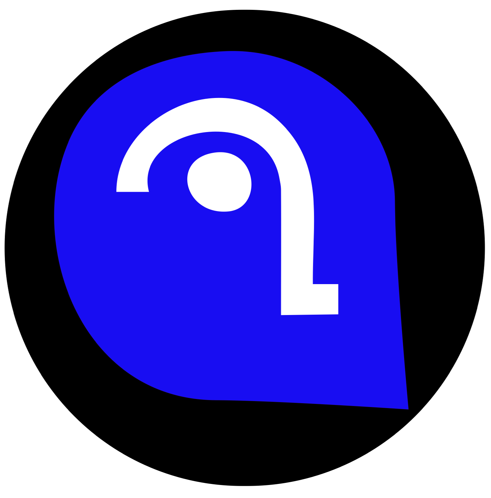
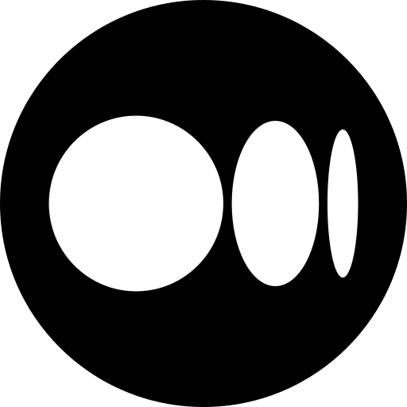

Web Dev Projects:
- My Main Website: Dashrepo combines my newsletter and Blog. I built it with Ghost CMS and has automated newsltters and Paid Memberships
- GitHub-Jekyll Portfolio Site: This is my portfolio site and also the first website that i built with SSG. I used Jekyll to buld the site and GitHub Pages to host it.
- 
- Newsletter: Blu Feed is a newsltter that I created on substack. The Blufeed brings monthly updates, Tools, and Resources related to Data Science, Web Development, and Digital Marketing.
- 
- My Medium blog:On Medium I write mainly about Data science, Web Dev Hacks and Productivity.